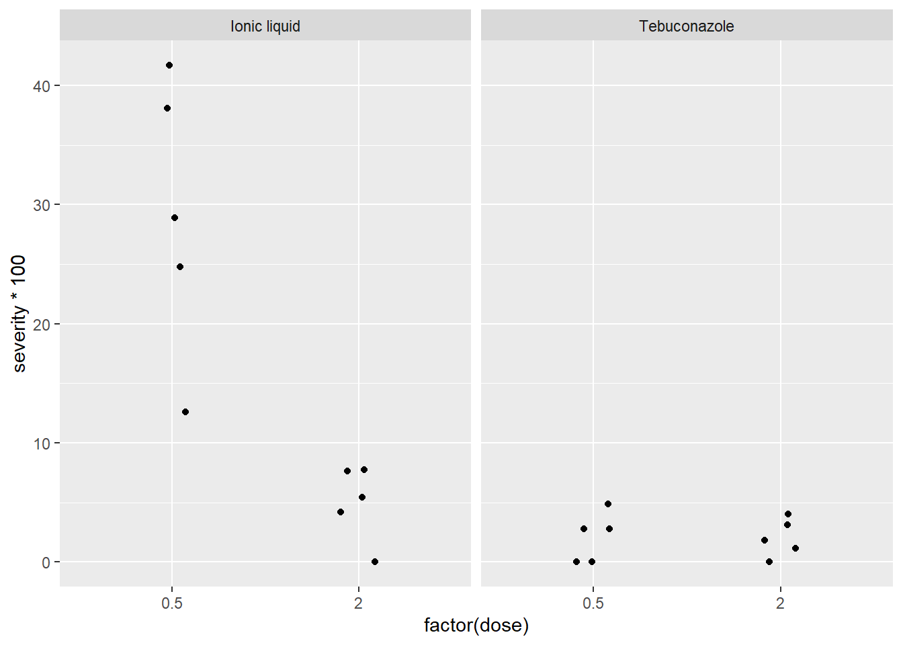
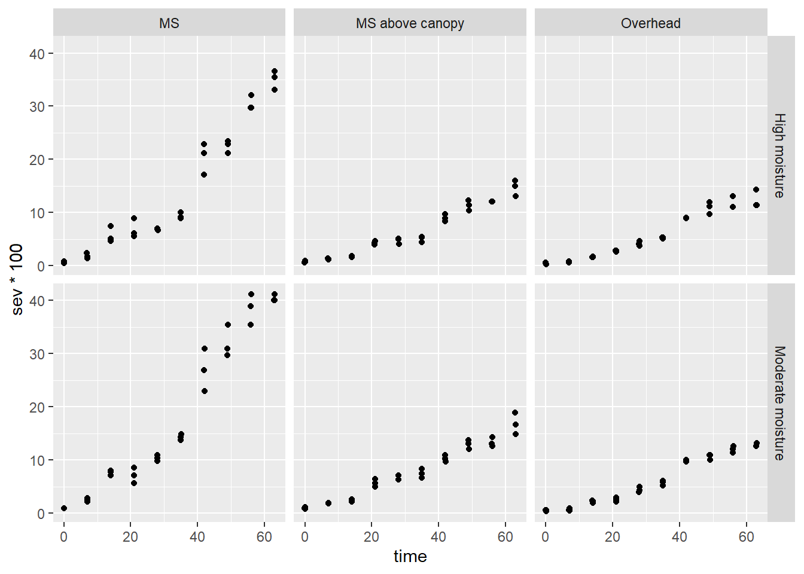
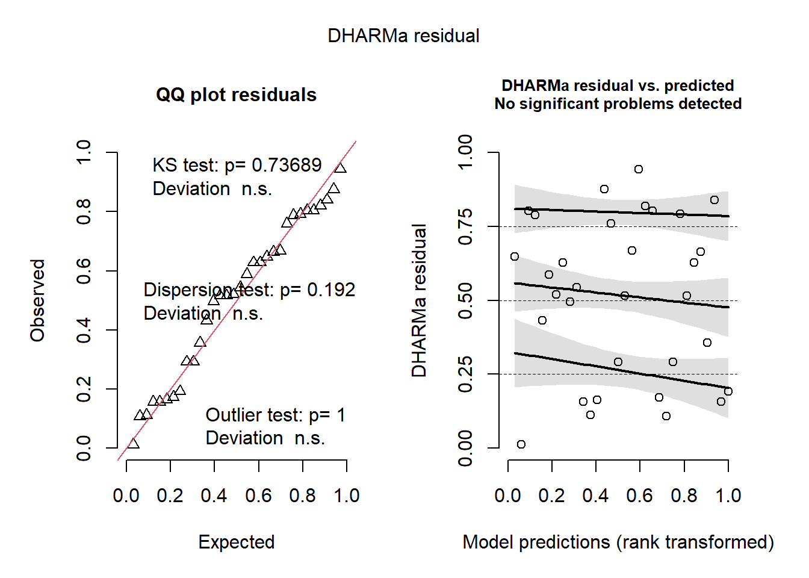
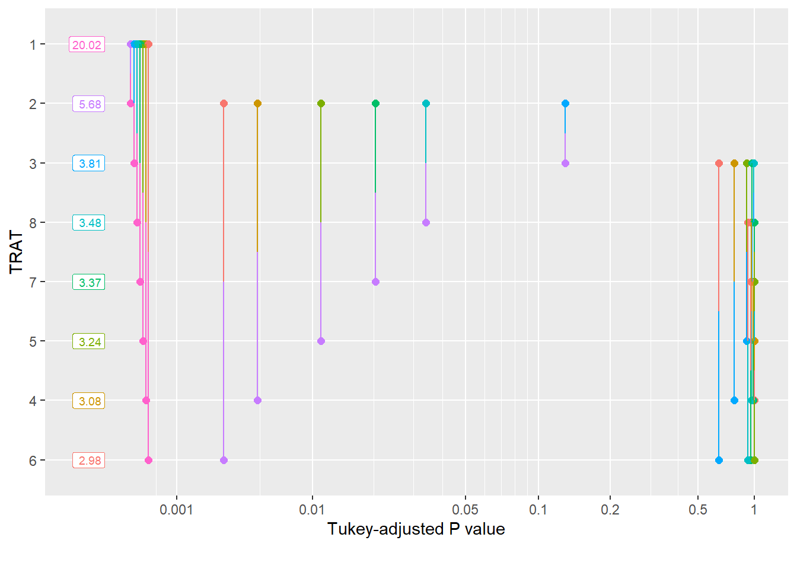

install.packages("epifitter")
install.packages("DHARMa")
install.packages("performance")Anova de dois fatores ou mais
A ANOVA de dois fatores é usada quando queremos analisar o efeito de dois fatores diferentes ao mesmo tempo. No nosso exemplo, estamos analisando o efeito do tratamento e da dose no nível de severidade de uma doença (por exemplo, fungos em plantas).
Pressupostos da ANOVA de dois fatores
Antes de aplicar a ANOVA de dois fatores, devemos garantir que os dados atendem aos seguintes pressupostos:
- Normalidade: Os dados devem seguir uma distribuição normal (testado usando o teste de Shapiro-Wilk nos resíduos).
- Independência: As amostras devem ser aleatórias e independentes.
- Homogeneidade das Variâncias: As variâncias entre os grupos devem ser semelhantes (testado utilizando o Teste de Bartlett ou Levene).
Pacotes que ainda não foram usados neste site e precisam ser instalados
Visualizando os Dados
A primeira coisa a fazer é visualizar os dados usando gráficos para entender sua distribuição.
library(ggplot2)
library(gsheet)
# Carregando os dados
fung_vaso <- gsheet2tbl("https://docs.google.com/spreadsheets/d/1bq2N19DcZdtax2fQW9OHSGMR0X2__Z9T/edit?gid=2023059672#gid=2023059672")
# Visualizando os dados com um gráfico de jitter
fung_vaso |>
ggplot(aes(factor(dose), severity*100)) + # Transformando dose em um fator
geom_jitter(width = 0.1) + # Adicionando dispersão para visualização
facet_wrap(~ treat) # Dividindo por tratamento
Realizando a ANOVA de dois fatores
Agora, vamos realizar a ANOVA de dois fatores para testar se existe uma diferença significativa na severidade da doença, levando em consideração tanto o tratamento quanto a dose.
# Ajustando o modelo de ANOVA de dois fatores
m_anti <- lm(severity ~ treat * dose, data = fung_vaso)
# Realizando a ANOVA
anova(m_anti)Analysis of Variance Table
Response: severity
Df Sum Sq Mean Sq F value Pr(>F)
treat 1 0.113232 0.113232 30.358 4.754e-05 ***
dose 1 0.073683 0.073683 19.755 0.0004077 ***
treat:dose 1 0.072739 0.072739 19.502 0.0004326 ***
Residuals 16 0.059678 0.003730
---
Signif. codes: 0 '***' 0.001 '**' 0.01 '*' 0.05 '.' 0.1 ' ' 1Verificando os resíduos
Antes de interpretar os resultados, é importante verificar se os pressupostos de normalidade e homogeneidade das variâncias são atendidos.
# Carregando o pacote DHARMa
library(DHARMa)
# Verificando os resíduos da ANOVA
plot(simulateResiduals(m_anti)) # Visualizando os resíduos
Estimativas de médias
Agora, podemos usar o pacote emmeans para calcular as médias ajustadas e realizar comparações entre os grupos, levando em consideração o efeito combinado de tratamento e dose.
library(emmeans)
library(multcomp)
# Realizando estimativas das médias ajustadas para cada tratamento dentro das doses
media_anti <- emmeans(m_anti, ~ treat | dose)
media_anti # Exibindo as médias ajustadasdose = 0.5:
treat emmean SE df lower.CL upper.CL
Ionic liquid 0.2921 0.0273 16 0.23420 0.3500
Tebuconazole 0.0210 0.0273 16 -0.03690 0.0789
dose = 2.0:
treat emmean SE df lower.CL upper.CL
Ionic liquid 0.0501 0.0273 16 -0.00781 0.1080
Tebuconazole 0.0202 0.0273 16 -0.03768 0.0781
Confidence level used: 0.95 # Comparações estatísticas entre os grupos
cld(media_anti) # Exibindo as letras compactas para comparaçõesdose = 0.5:
treat emmean SE df lower.CL upper.CL .group
Tebuconazole 0.0210 0.0273 16 -0.03690 0.0789 1
Ionic liquid 0.2921 0.0273 16 0.23420 0.3500 2
dose = 2.0:
treat emmean SE df lower.CL upper.CL .group
Tebuconazole 0.0202 0.0273 16 -0.03768 0.0781 1
Ionic liquid 0.0501 0.0273 16 -0.00781 0.1080 1
Confidence level used: 0.95
significance level used: alpha = 0.05
NOTE: If two or more means share the same grouping symbol,
then we cannot show them to be different.
But we also did not show them to be the same. # Realizando a decomposição das médias por dose dentro de cada tratamento
media_anti <- emmeans(m_anti, ~ dose | treat)
media_anti # Exibindo as médias ajustadas por dosetreat = Ionic liquid:
dose emmean SE df lower.CL upper.CL
0.5 0.2921 0.0273 16 0.23420 0.3500
2.0 0.0501 0.0273 16 -0.00781 0.1080
treat = Tebuconazole:
dose emmean SE df lower.CL upper.CL
0.5 0.0210 0.0273 16 -0.03690 0.0789
2.0 0.0202 0.0273 16 -0.03768 0.0781
Confidence level used: 0.95 # Comparações estatísticas entre os grupos
cld(media_anti) # Exibindo as letras compactas para comparaçõestreat = Ionic liquid:
dose emmean SE df lower.CL upper.CL .group
2.0 0.0501 0.0273 16 -0.00781 0.1080 1
0.5 0.2921 0.0273 16 0.23420 0.3500 2
treat = Tebuconazole:
dose emmean SE df lower.CL upper.CL .group
2.0 0.0202 0.0273 16 -0.03768 0.0781 1
0.5 0.0210 0.0273 16 -0.03690 0.0789 1
Confidence level used: 0.95
significance level used: alpha = 0.05
NOTE: If two or more means share the same grouping symbol,
then we cannot show them to be different.
But we also did not show them to be the same. Visualizando a interação
Podemos verificar visualmente se existe uma interação entre o tratamento e a dose. Uma maneira simples de fazer isso é utilizando um gráfico de interação.
# Gráfico de interação
interaction.plot(fung_vaso$treat, fung_vaso$dose, fung_vaso$severity)
Se as linhas no gráfico não forem paralelas, isso indica uma interação significativa entre os fatores. Se forem paralelas, a interação é provavelmente não significativa.
A ANOVA fatorial é uma técnica estatística usada para analisar o impacto de dois ou mais fatores (variáveis independentes) sobre uma variável dependente, considerando tanto os efeitos principais de cada fator quanto as possíveis interações entre os fatores.
- Efeitos principais: Analisam o impacto de cada fator isoladamente.
- Interação: Verifica se o efeito de um fator depende do nível de outro fator.
Neste exemplo, a ANOVA fatorial será utilizada para analisar o impacto de três fatores: tratamento, dose e irrigação, na severidade de uma doença (representada pela AUDPC - Área Sob a Curva do Progresso da Doença). O objetivo é entender como esses fatores e suas interações afetam a severidade da doença.
Expansão da Análise
Agora, vamos expandir a análise para incluir um terceiro fator: o tipo de irrigação. Realizaremos a ANOVA fatorial para três fatores: tratamento, dose e irrigação.
A seguir, faremos uma análise detalhada dos efeitos principais de cada fator e das interações entre eles na severidade da doença.
# Carregar pacotes necessários
library(epifitter)
library(dplyr)
library(ggplot2)
library(emmeans)
library(DHARMa)
# Carregar o conjunto de dados
oidio <- PowderyMildew
# Filtrando os dados para as condições desejadas de irrigação
oidio |>
filter(irrigation_type %in% c("MS", "MS above canopy", "Overhead")) |>
ggplot(aes(time, sev * 100)) +
geom_jitter(width = 0.1) +
facet_grid(moisture ~ irrigation_type) # Visualização dos dados
# Sumarizando a área abaixo da curva (AUDPC) por tratamento e bloco
oidio3 <- oidio |>
group_by(irrigation_type, moisture, block) |>
summarize(AUDPC = sum(sev)) # Alteração do cálculo de AUDPC para somatório de 'sev' (ou pode ser outra fórmula)
# Visualizando os dados de AUDPC
oidio3 |>
filter(irrigation_type %in% c("MS", "MS above canopy", "Overhead")) |>
ggplot(aes(irrigation_type, AUDPC, color = moisture)) +
geom_point(width = 0.1) +
scale_y_continuous(limits = c(0, 20)) # Ajustando limites do eixo Y# Realizando a ANOVA fatorial para AUDPC
oidio4 <- oidio3 |>
filter(irrigation_type %in% c("MS", "MS above canopy", "Overhead"))
# Ajustando o modelo de ANOVA fatorial
anov_oidio <- lm(AUDPC ~ irrigation_type * moisture, data = oidio4)
# Exibindo os resultados da ANOVA
anova(anov_oidio)Analysis of Variance Table
Response: AUDPC
Df Sum Sq Mean Sq F value Pr(>F)
irrigation_type 2 3.5877 1.79385 551.709 1.55e-12 ***
moisture 1 0.1594 0.15942 49.032 1.43e-05 ***
irrigation_type:moisture 2 0.1187 0.05935 18.253 0.0002292 ***
Residuals 12 0.0390 0.00325
---
Signif. codes: 0 '***' 0.001 '**' 0.01 '*' 0.05 '.' 0.1 ' ' 1# Verificando os resíduos da ANOVA
plot(simulateResiduals(anov_oidio))# Estimativas das médias ajustadas
medias_oidio <- emmeans(anov_oidio, ~ irrigation_type | moisture)
medias_oidio # Exibindo as médias ajustadasmoisture = High moisture:
irrigation_type emmean SE df lower.CL upper.CL
MS 1.396 0.0329 12 1.324 1.467
MS above canopy 0.647 0.0329 12 0.576 0.719
Overhead 0.590 0.0329 12 0.519 0.662
moisture = Moderate moisture:
irrigation_type emmean SE df lower.CL upper.CL
MS 1.804 0.0329 12 1.732 1.876
MS above canopy 0.782 0.0329 12 0.711 0.854
Overhead 0.612 0.0329 12 0.540 0.683
Confidence level used: 0.95 # Comparações das médias ajustadas entre os grupos
cld(medias_oidio) # Comparação estatística entre os gruposmoisture = High moisture:
irrigation_type emmean SE df lower.CL upper.CL .group
Overhead 0.590 0.0329 12 0.519 0.662 1
MS above canopy 0.647 0.0329 12 0.576 0.719 1
MS 1.396 0.0329 12 1.324 1.467 2
moisture = Moderate moisture:
irrigation_type emmean SE df lower.CL upper.CL .group
Overhead 0.612 0.0329 12 0.540 0.683 1
MS above canopy 0.782 0.0329 12 0.711 0.854 2
MS 1.804 0.0329 12 1.732 1.876 3
Confidence level used: 0.95
P value adjustment: tukey method for comparing a family of 3 estimates
significance level used: alpha = 0.05
NOTE: If two or more means share the same grouping symbol,
then we cannot show them to be different.
But we also did not show them to be the same. # Decompondo as médias por 'moisture' dentro de cada tipo de irrigação
medias_oidio2 <- emmeans(anov_oidio, ~ moisture | irrigation_type)
medias_oidio2 # Exibindo as médias ajustadas por 'moisture'irrigation_type = MS:
moisture emmean SE df lower.CL upper.CL
High moisture 1.396 0.0329 12 1.324 1.467
Moderate moisture 1.804 0.0329 12 1.732 1.876
irrigation_type = MS above canopy:
moisture emmean SE df lower.CL upper.CL
High moisture 0.647 0.0329 12 0.576 0.719
Moderate moisture 0.782 0.0329 12 0.711 0.854
irrigation_type = Overhead:
moisture emmean SE df lower.CL upper.CL
High moisture 0.590 0.0329 12 0.519 0.662
Moderate moisture 0.612 0.0329 12 0.540 0.683
Confidence level used: 0.95 # Comparando as médias ajustadas
cld(medias_oidio2) # Comparação estatística entre as médias ajustadasirrigation_type = MS:
moisture emmean SE df lower.CL upper.CL .group
High moisture 1.396 0.0329 12 1.324 1.467 1
Moderate moisture 1.804 0.0329 12 1.732 1.876 2
irrigation_type = MS above canopy:
moisture emmean SE df lower.CL upper.CL .group
High moisture 0.647 0.0329 12 0.576 0.719 1
Moderate moisture 0.782 0.0329 12 0.711 0.854 2
irrigation_type = Overhead:
moisture emmean SE df lower.CL upper.CL .group
High moisture 0.590 0.0329 12 0.519 0.662 1
Moderate moisture 0.612 0.0329 12 0.540 0.683 1
Confidence level used: 0.95
significance level used: alpha = 0.05
NOTE: If two or more means share the same grouping symbol,
then we cannot show them to be different.
But we also did not show them to be the same. | H. moisture | M. moisture | |
|---|---|---|
| MS | 8.52 Aa | 11.18 Ab |
| MS Ac. | 3.99 Ba | 4.86 Bb |
| Overhead | 3.68 Ba | 3.81 Ca |
| CV = 6.41 |
# Carregando pacotes necessários
library(tidyverse) # Para manipulação de dados e gráficos
library(readxl) # Para ler arquivos Excel
library(Hmisc) # Para análise estatística
# Carregando os dados da planilha Excel
fung_campo <- gsheet2tbl ("https://docs.google.com/spreadsheets/d/1bq2N19DcZdtax2fQW9OHSGMR0X2__Z9T/edit?gid=866852711#gid=866852711")
# Visualização dos dados com um gráfico de dispersão
fung_campo |>
mutate (TRAT = factor(TRAT)) |> # Transformando a variável 'TRAT' em fator (para garantir que o R trate os níveis como categorias)
ggplot(aes(TRAT, PROD)) + # Criando o gráfico com 'TRAT' no eixo X e 'PROD' no eixo Y
geom_jitter(width = 0.2) + # Adicionando dispersão nos pontos para visualização
stat_summary( # Adicionando a linha de média com intervalo de confiança
fun.data = "mean_cl_boot", # Função para calcular a média com intervalo de confiança bootstrap
colour = "red", # Cor da linha de média
width = 0.3 # Largura dos pontos
)# Transformando as variáveis 'TRAT' e 'BLOCO' em fatores
# (Por padrão, o R interpreta variáveis numéricas como contínuas, mas aqui queremos tratá-las como categorias)
fung_campo$TRAT <- factor(fung_campo$TRAT)
fung_campo$BLOCO <- factor(fung_campo$BLOCO)
# Realizando a ANOVA para verificar o efeito dos fatores 'BLOCO' e 'TRAT' na variável 'PROD' (produção)
anova_campo <- lm(PROD ~ BLOCO + TRAT, data = fung_campo) # Modelo linear
anova(anova_campo) # Exibindo a tabela de ANOVAAnalysis of Variance Table
Response: PROD
Df Sum Sq Mean Sq F value Pr(>F)
BLOCO 3 105665 35222 0.2171 0.88340
TRAT 7 2993906 427701 2.6367 0.04021 *
Residuals 21 3406431 162211
---
Signif. codes: 0 '***' 0.001 '**' 0.01 '*' 0.05 '.' 0.1 ' ' 1# Testando os pressupostos da ANOVA: normalidade dos resíduos e homocedasticidade
library(DHARMa) # Pacote para verificar resíduos
plot(simulateResiduals(anova_campo)) # Simula e plota os resíduos para avaliar se há violação dos pressupostos
# Estimativas das médias ajustadas para o fator 'TRAT' (tratamento)
library(emmeans) # Para calcular as médias ajustadas
means_campo <- emmeans(anova_campo, ~ TRAT) # Calcula as médias ajustadas para os tratamentos
means_campo # Exibe as médias ajustadas TRAT emmean SE df lower.CL upper.CL
1 4219 201 21 3800 4638
2 4935 201 21 4516 5354
3 5110 201 21 4691 5529
4 5140 201 21 4721 5559
5 5122 201 21 4703 5541
6 5256 201 21 4837 5675
7 5128 201 21 4709 5546
8 5078 201 21 4659 5497
Results are averaged over the levels of: BLOCO
Confidence level used: 0.95 # Teste de médias entre os grupos
library(multcomp) # Pacote para comparações múltiplas (post-hoc)
cld(means_campo) # Comparação entre os tratamentos, mostrando as letras compactas para indicar diferenças estatísticas TRAT emmean SE df lower.CL upper.CL .group
1 4219 201 21 3800 4638 1
2 4935 201 21 4516 5354 12
8 5078 201 21 4659 5497 12
3 5110 201 21 4691 5529 12
5 5122 201 21 4703 5541 12
7 5128 201 21 4709 5546 12
4 5140 201 21 4721 5559 12
6 5256 201 21 4837 5675 2
Results are averaged over the levels of: BLOCO
Confidence level used: 0.95
P value adjustment: tukey method for comparing a family of 8 estimates
significance level used: alpha = 0.05
NOTE: If two or more means share the same grouping symbol,
then we cannot show them to be different.
But we also did not show them to be the same. plot(means_campo) # Plota as médias ajustadas
# Comparações post-hoc com matriz de significância
pwpp(means_campo) # Mostra as comparações entre tratamentospwpm(means_campo) # Exibe a matriz de comparações entre os grupos 1 2 3 4 5 6 7 8
1 [4219] 0.2430 0.0792 0.0640 0.0728 0.0272 0.0700 0.0985
2 -715.8 [4935] 0.9983 0.9953 0.9974 0.9430 0.9968 0.9995
3 -890.8 -175.0 [5110] 1.0000 1.0000 0.9994 1.0000 1.0000
4 -921.0 -205.3 -30.2 [5140] 1.0000 0.9999 1.0000 1.0000
5 -902.8 -187.0 -12.0 18.3 [5122] 0.9997 1.0000 1.0000
6 -1037.0 -321.3 -146.2 -116.0 -134.3 [5256] 0.9998 0.9981
7 -908.3 -192.5 -17.5 12.8 -5.5 128.8 [5127] 1.0000
8 -859.0 -143.2 31.8 62.0 43.8 178.0 49.2 [5078]
Row and column labels: TRAT
Upper triangle: P values adjust = "tukey"
Diagonal: [Estimates] (emmean)
Lower triangle: Comparisons (estimate) earlier vs. later# Observação: Neste caso, não há diferença estatística significativa, embora haja um grande ganho de produção nos tratamentos.
# Isso indica que o efeito do tratamento não é estatisticamente significativo, mas o efeito pode ser relevante do ponto de vista prático.
# Analisando o efeito do 'TRAT' sobre a severidade da doença (variável 'FER' - ferrugem)
# Realizando a ANOVA para a severidade (log-transformada para normalizar a distribuição)
anova_fer <- lm(log(FER) ~ BLOCO + TRAT, data = fung_campo)
anova(anova_fer) # Exibindo a tabela de ANOVA para 'FER'Analysis of Variance Table
Response: log(FER)
Df Sum Sq Mean Sq F value Pr(>F)
BLOCO 3 0.2064 0.06880 1.7961 0.1788
TRAT 7 11.5210 1.64585 42.9665 4.838e-11 ***
Residuals 21 0.8044 0.03831
---
Signif. codes: 0 '***' 0.001 '**' 0.01 '*' 0.05 '.' 0.1 ' ' 1# Testando os resíduos da ANOVA para 'FER'
plot(simulateResiduals(anova_fer)) # Verificando a normalidade e homocedasticidade
# Estimando as médias ajustadas para 'TRAT' no modelo de severidade
means_fer <- emmeans(anova_fer, ~ TRAT, type = "response") # Usando 'type = response' para reverter a transformação logarítmica
means_fer # Exibe as médias ajustadas para 'FER' TRAT response SE df lower.CL upper.CL
1 20.02 1.960 21 16.33 24.54
2 5.68 0.556 21 4.63 6.96
3 3.81 0.373 21 3.11 4.67
4 3.08 0.301 21 2.51 3.78
5 3.24 0.317 21 2.64 3.97
6 2.98 0.292 21 2.43 3.65
7 3.37 0.330 21 2.75 4.13
8 3.48 0.341 21 2.84 4.27
Results are averaged over the levels of: BLOCO
Confidence level used: 0.95
Intervals are back-transformed from the log scale # Comparação das médias ajustadas para 'TRAT'
cld(means_fer) # Comparação entre os tratamentos de severidade, com letras para indicar diferenças TRAT response SE df lower.CL upper.CL .group
6 2.98 0.292 21 2.43 3.65 1
4 3.08 0.301 21 2.51 3.78 1
5 3.24 0.317 21 2.64 3.97 1
7 3.37 0.330 21 2.75 4.13 1
8 3.48 0.341 21 2.84 4.27 1
3 3.81 0.373 21 3.11 4.67 12
2 5.68 0.556 21 4.63 6.96 2
1 20.02 1.960 21 16.33 24.54 3
Results are averaged over the levels of: BLOCO
Confidence level used: 0.95
Intervals are back-transformed from the log scale
P value adjustment: tukey method for comparing a family of 8 estimates
Tests are performed on the log scale
significance level used: alpha = 0.05
NOTE: If two or more means share the same grouping symbol,
then we cannot show them to be different.
But we also did not show them to be the same. plot(means_fer) # Plota as médias ajustadas
# Comparações post-hoc com matriz de significância
pwpp(means_fer) # Mostra as comparações entre os tratamentos de severidade
pwpm(means_fer) # Exibe a matriz de comparações entre os grupos de severidade 1 2 3 4 5 6 7 8
1 [20.02] <.0001 <.0001 <.0001 <.0001 <.0001 <.0001 <.0001
2 3.525 [ 5.68] 0.1252 0.0048 0.0110 0.0028 0.0204 0.0343
3 5.259 1.492 [ 3.81] 0.7832 0.9335 0.6440 0.9843 0.9976
4 6.500 1.844 1.236 [ 3.08] 0.9999 1.0000 0.9976 0.9842
5 6.178 1.753 1.175 0.951 [ 3.24] 0.9984 1.0000 0.9994
6 6.721 1.906 1.278 1.034 1.088 [ 2.98] 0.9842 0.9431
7 5.945 1.686 1.130 0.915 0.962 0.885 [ 3.37] 1.0000
8 5.750 1.631 1.093 0.885 0.931 0.856 0.967 [ 3.48]
Row and column labels: TRAT
Upper triangle: P values null = 1 adjust = "tukey"
Diagonal: [Estimates] (response) type = "response"
Lower triangle: Comparisons (ratio) earlier vs. later# Calculando o coeficiente de variação do modelo
library(agricolae) # Pacote para análise agronômica
cv.model(anova_fer) # Calcula o coeficiente de variação do modelo para severidade[1] 13.13068